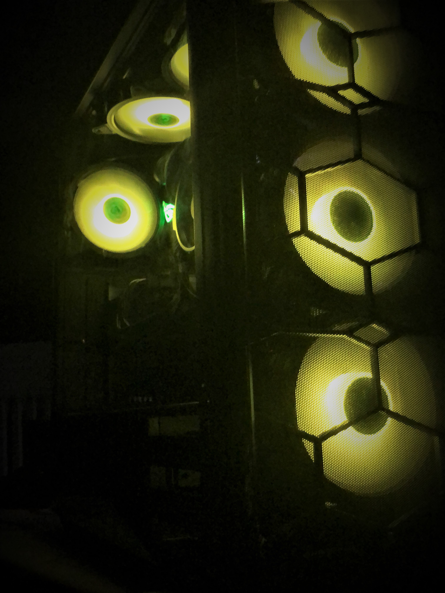
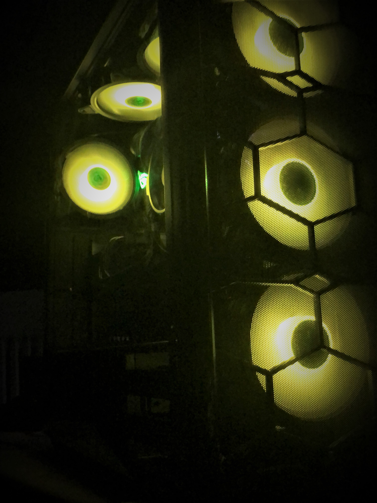

We're all spending more time indoors this winter. As a result, many people are updating their computer system. I thought it might be good to build a capable, and current computer system as well. It took about a month to research and source the parts, and I followed along with a couple youtube tutorials for instruction.
Total build time was about three hours. This is very slow. An experienced computer builder could have done the same job in as little as 30 minutes. I will admit I was being a little too careful, and stopped several times, because I thought I broke something.
Pandemic PC
 
